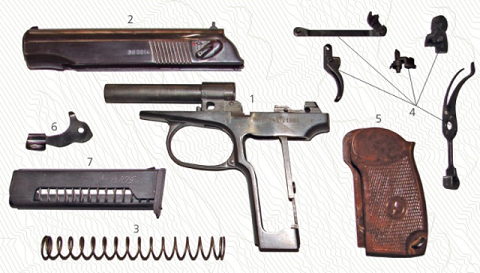
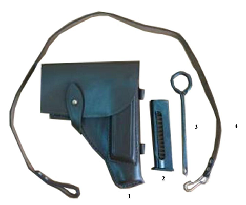

Боевые свойства пистолета
- Калибр 9 мм
- Принцип работы: отдача свободного затвора
-
Вес:
- неснаряженный 730 гр.
- снаряженный 810 гр.
- Прицельная дальность до 50 м.
- Начальная скорость полета пули 315 м/с
- Скорострельность 30 в/м.
- Емкость магазина 8
- Длина пистолета 161 мм
- Длина ствола 93 мм
- Высота оружия 126 мм
- Число нарезов 4
-
Патрон 9*18
- вес 10 гр.
- вес пули 6,1 гр
Основные части и механизмы ПМ
Пистолет состоит из следующих основных частей и механизмов:
- рамки со стволом и спусковой скобой;
- затвора с ударником, выбрасывателем и предохранителем;
- возвратной пружины;
- ударно-спускового механизма;
- рукоятки с винтом;
- затворной задержки;
- магазина.
К каждому пистолету придается принадлежность: запасный магазин, протирка, кобура, пистолетный ремешок.
Разборка,сборка ПМ
Неполная разборка производится для чистки, смазки и осмотра пистолета полная для чистки при сильном
загрязнена
пистолета, после нахождения его под дождем или в снегу, при переходе на новую смазку, а также при ремонте.
Частая полная разборка пистолета не допускается, так как она ускоряет изнашивание частей и механизмов.
Порядок неполной разборки ПМ:
- Извлечь магазин из основания рукоятки
- Отделить затвор от рамки
- Снять со ствола возвратную пружину
Порядок сборки ПМ:
Сборку пистолета после неполной разборки производить в обратном порядке.